## Encumbered Land Value<span class="subtitle"><br/>Thies Lindenthal | Joe Nichols | John Clapp<br><br>Oxford, 9.5.2025</span> <br><br> <br><br> <br><br>
## Estimating Land Values<span class="subtitle"><br/>Third attempt</span> * Fun research agenda—but easy to get side-tracked - <span class="transparent70">Clapp, J. and T. Lindenthal (2022). <a href="https://link.springer.com/article/10.1007/s11146-021-09834-4">“Urban land valuation with bundled good and land residual assumptions”</a>. JHE</span> - <span class="transparent70">Clapp, J., Cohen, J. and T. Lindenthal (2021). <a href="https://doi.org/10.1016/j.jhe.2022.101872">“Are Estimates of Rapid Growth in Urban Land Values an Artifact of the Land Residual Model?”</a>. JREFE</span> <br><br><br><br>
## This paper<span class="subtitle"><br/>Research idea in a nutshell</span> * Three interrelated research questions 1. <span class="transparent70">How to estimate land values in urban areas?</span> 2. <span class="transparent70">Will improved land value estimates enable better automatic valuations<br>and risk assessments?</span> 3. <span class="transparent70">Where will new supply in cities emerge?</span> * I will focus on intuition and empirics in this presentation.<br> Theoretical model in paper. <br><br><br><br>
## Property is a bundled good <span class="subtitle"><br/>Property Value = DCF of rents from structure at location + Option Value * If structure has been developed to highest and best use - Option value = 0 - Land Value = Property value - replacement cost of structure * If structure is not at HBU - Land value can be encumbered: current structure impairs option value <br><br><br><br>
## Development/supply of new space<span class="subtitle"><br/>Samuelson-McKean Option Value for American Options <div class="figure"> 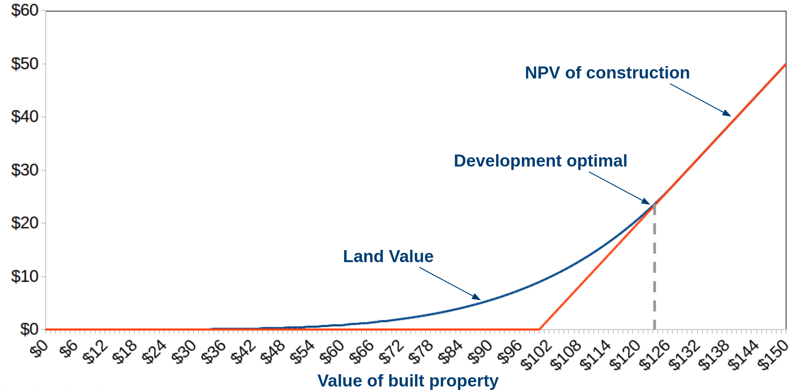 </div> * Kinked supply response to house price changes * Optimal (re)development depends on construction cost + sacrificed existing structure (if any)
## Data needs<span class="subtitle"><br/>Estimate land values, highest and best use configuration, property values</span> * Maricopa County assessor's office data, 2007–2021 - Complete, reliable, various angles offered. <div class="figure"> 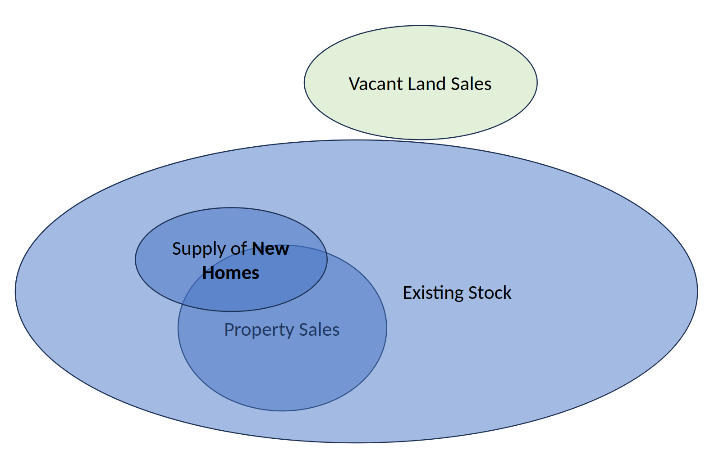 </div>
## Intense dynamics<span class="subtitle"><br/>Maricopa County is ideal for studying house and land values throughout the cycle!</span> <div class="figure"> <p class="title">House Price Indices, Maricopa County: 2007–2018</p> 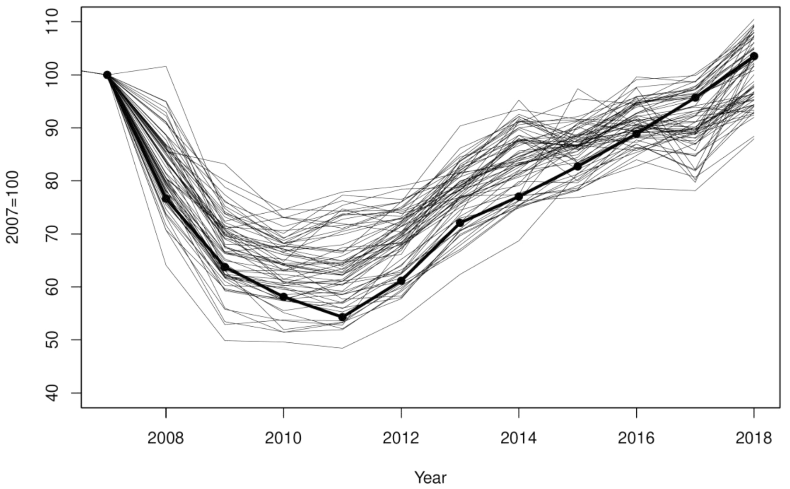 <p class="source">Source: <a href="https://doi.org/10.1016/j.jhe.2022.101872">Clapp & Lindenthal (2022)</a></p> </div>
## Land values are more volatile<span class="subtitle"><br/>Land values fall/rise faster than property values</span> <div class="figure"> <p class="title">Land-value ratios, based on residual approach (Don't do this at home)</p> 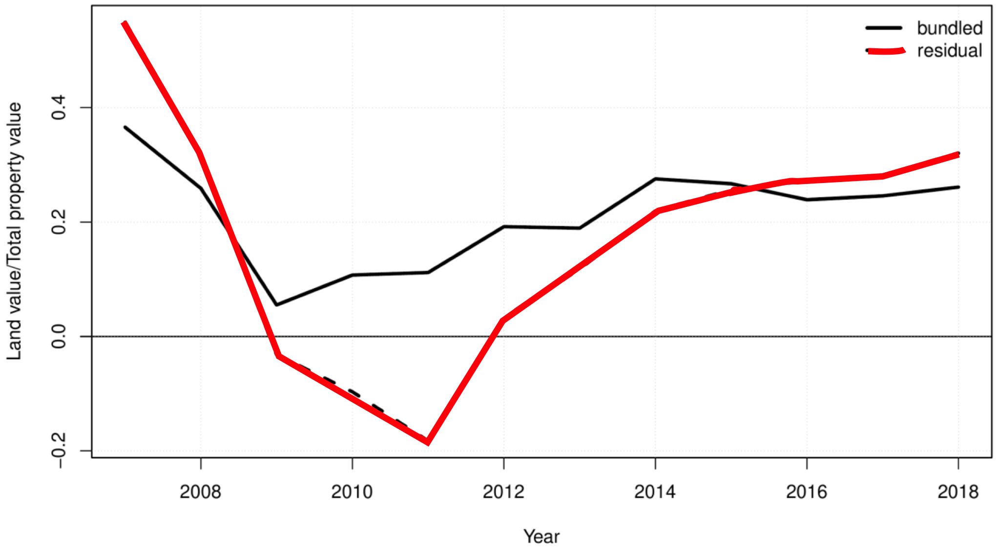 <p class="source">Source: <a href="https://doi.org/10.1016/j.jhe.2022.101872">Clapp & Lindenthal (2022)</a></p> </div>
## > 13 million obs.—still sparse!<span class="subtitle"><br/>Spatial data offer structure: half-mile grid, 12K points</span> <div class="figure"> <p class="title">New Supply of Real Estate, Maricopa County, 2007–2021</p> 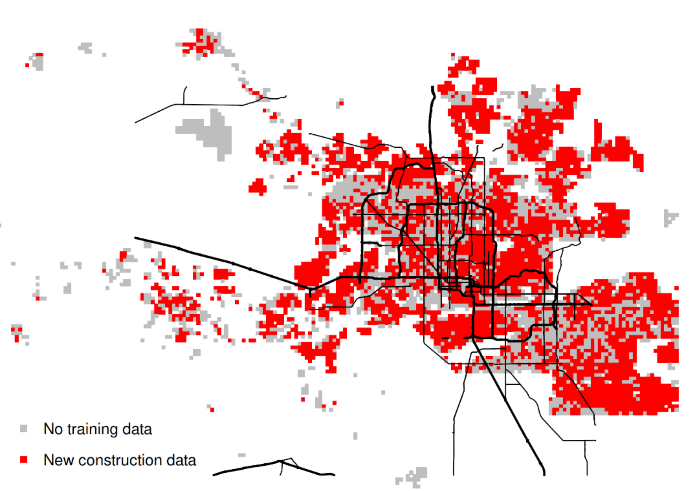 </div>
## Trad. spatial econometrics?<span class="subtitle"><br/>No. We exploit spatial dependencies with Artificial Neural Networks</span> * Three models independently trained 1. Vacant Land Value = f(Land-related hedonics, time, distance to grid points) - Trained on sales of vacant, developable land 2. Highest best use (m<sup>2</sup>) = f(Est. vacant land value, land hedonics, time, distance to grid points) - Trained on all newly built homes (n=160K) 3. Property values = f(Est. vacant land value, HBU gap, land and structure hedonics, time, distance to grid points) - Trained on all relevant sales (n=350K) * ANN's offer functional flexibility and interactions
## Simple Models<span class="subtitle"><br/>Not very deep, moderately wide neural network designs perform well</span> * Basic hedonic features + matrix of inverted distances to half-mile grid * Runs on a modern laptop (sufficient RAM helpful) <div class="figure"> 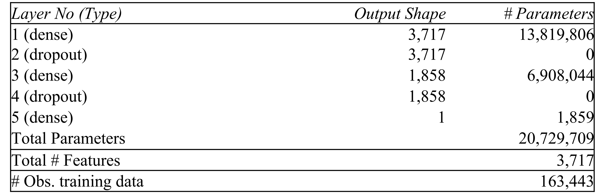 </div>
## Better value surfaces<span class="subtitle"><br/>Machine Learning is great for <del>BIG</del> <ins>thin</ins> data</span></span> <div class="figure"> <img src="imgs/intspace.png" height=500> <p class="title">Highest and best use? Interior floor space of new residential units.</p> </div>
## Land Values<span class="subtitle transparent70"><br/>$/sqft</span> <p> </p> <p> </p> <p> </p> <p> </p> <p> </p> <p> </p> <p> </p> <p> </p> <p> </p> <p> </p> <p> </p> <p> </p> <p> </p> <p> </p>
## Actual use vs. HBU<span class="subtitle"><br/> If you could start again, on which parcels would you build more?</span> <div class="figure"> <img src="imgs/gaprel.png" height=500> <p class="title">Observed vs. optimal interior floor size</p> </div>
## Dynamic HBU<span class="subtitle"><br/>Cycle is reflected in size of new houses.</span> <div class="figure"> <p class="title">Average gap to 2021 HBU size, by property age</p> 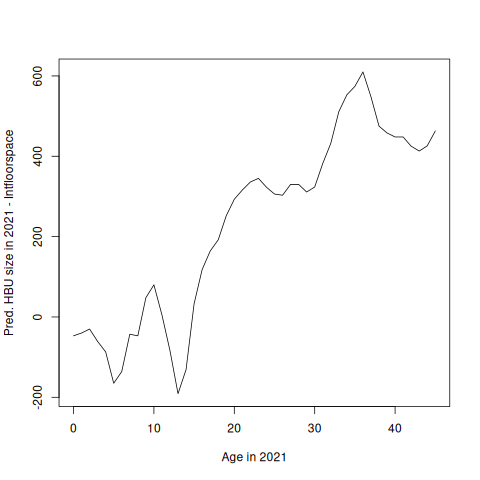 </div>
## Better Mouse-Trap?<span class="subtitle"><br/>AVM's perform better with land value and gap to HBU estimates</span> * Pediction accuracy improves when gap to HBU and vacant land value estimates are fed into the model - CODs improve, regression to means reduced <div class="figure"> <p class="title">Property Values, Maricopa County</p> 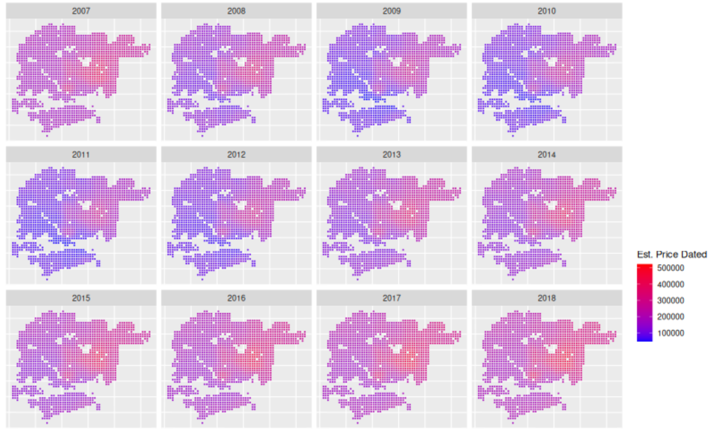 </div>
## Asset-level investment risk<span class="subtitle"><br/>Real Options are a substantial contributor to asset values—and even more so—risk</span> <div class="figure"> <p class="title">Value of real option to supply more space</p> 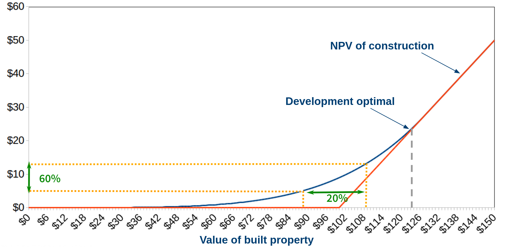 </div>
## Supply<span class="subtitle"><br/>Where do we see supply? Kinked response for improved land</span> <div class="figure"> <p class="title">Prob. of new supply at parcel-level: extensive vs. intensive margin</p> 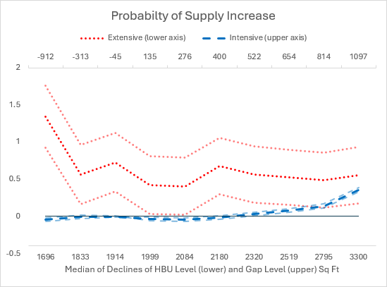 </div>
## Supply<span class="subtitle"><br/>Where do we see supply? Kinked response for improved land</span> <div class="figure"> <p class="title">Size of supply at parcel-level: extensive vs. intensive margin</p> 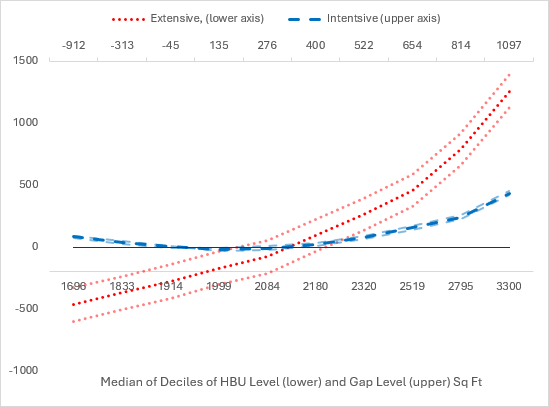 </div>